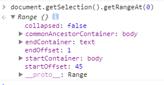

关键词：range|selection
出处：HTML5&CSS3权威指南 P95
一、Range对象 & Selection对象
1.概念
一个Range对象代表页面上的一段连续区域。通过Range对象，可以获取或修改页面上的任何区域。
每一个浏览器窗口及每一个窗口中的页面都具有一个Selection对象，代表用户鼠标在页面中所选取的区域。
每一个Selection对象都具有一个或多个Range对象。
获取Selection对象的某个Range对象。
2.Range对象
Range对象属性，如图1。
3.Range对象的3个方法，例子1。
selectNode、selectNodeContents、deleteContents方法
4.Range对象的6个方法，例子2。
setStart、setEnd、setStartBefore、setStartAfter、setEndBefore、setEndAfter方法
图1：
参考：